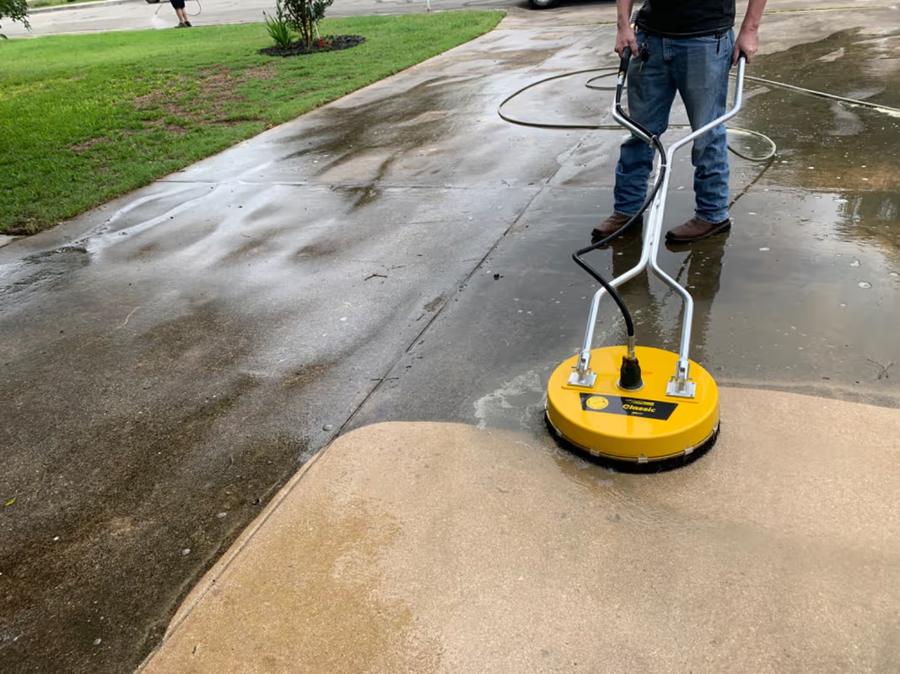

Guía
Hidrolavado vs. limpieza tradicional: ¿cuál es la diferencia?
Conoce las diferencias entre limpiar manualmente y utilizar agua a presión, y cuándo puede ser conveniente cada método.
Leer artículo →
Información práctica sobre hidrolavado, lavado a presión, limpieza exterior y mantenimiento para hogares, comercios y propiedades en Panamá.

Conoce las diferencias entre limpiar manualmente y utilizar agua a presión, y cuándo puede ser conveniente cada método.
Leer artículo →
7 señales que pueden indicar que una acera, terraza, fachada o estacionamiento necesita limpieza profesional.
Leer artículo →
Conoce cómo el lavado a presión puede ayudar a limpiar pisos, concreto, cemento, adoquines y otras superficies exteriores.
Leer artículo →
Limpieza de estacionamientos y áreas de concreto para residencias, comercios, escuelas, iglesias, hospitales y otras propiedades.
Leer artículo →
Descubre cómo limpiar terrazas, patios y otras áreas exteriores afectadas por humedad, verdín, moho y suciedad acumulada.
Leer artículo →
Hidrolavado de pisos, aceras, estacionamientos, terrazas, fachadas y otras superficies exteriores en La Chorrera.
Leer artículo →
Lavado a presión para residencias, comercios y propiedades en Arraiján y sus alrededores.
Leer artículo →
Servicio de lavado a presión, lavado de alta presión e hidrolavado para superficies exteriores.
Leer artículo →RenovaH2O ofrece hidrolavado residencial y comercial en Panamá.
Solicitar cotización